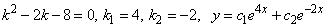
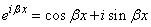

28.2. Решение ОЛДУ
второго порядка с постоянными коэффициентами
Рассмотрим уравнение
. ()
Ищем его решение в виде  (подстановка
Эйлера), найдем значения
(подстановка
Эйлера), найдем значения  . Продифференцируем
. Продифференцируем
 :
:
(подстановка
Эйлера), найдем значения . Продифференцируем
:, .
Подстановка такого вида решения в ДУ дает:
, .
.
.Уравнение
Характеристическое
уравнение ОЛДУ второго порядка
называется
характеристическим уравнением ОЛДУ .
Характеристическое
уравнение ОЛДУ второго порядка
называется
характеристическим уравнением ОЛДУ . ()Решения характеристического уравнения имеют вид:
.
Возможны следующие виды решений:
- Если , то
характеристическое уравнение имеет два действительных различных корня
 и
и  ,
.
,
.
В этом случае ОЛДУ имеет два линейно независимых () различных частных решения  . Общее решение ДУ имеет вид:
. Общее решение ДУ имеет вид:
. Общее решение ДУ имеет вид: ,
,где .
Найдите решение ОЛДУ .
.
- Если , то
 и характеристическое уравнение
имеет корень кратности два.
и характеристическое уравнение
имеет корень кратности два.
Одно частное решение имеет вид:
.
Второе линейно независимое частное решение ищем в виде:
 ,
,тогда
,
.
После подстановки в ОЛДУ и сокращения на получим
,
и уравнение для принимает вид:
.
В рассматриваемом случае равных корней характеристического
уравнения , и тогда
,
.
Положим,, тогда .
Общее решение ОЛДУ в случае имеет
вид:
 ,
,где .
Убедиться в том, что выражение является
вторым линейно независимым решением дифференциального уравнения при условии,
что является решением характеристического
уравнения, можно непосредственной подстановкой.
.
.
- Если , то характеристическое уравнение имеет два сопряженных комплексных корня
,
,
где .
Частные решения имеют вид:
.
Общее решение
,
где и –
такие комплексные постоянные, что – действительная
функция.
– действительная
функция. По формуле Эйлера:
, ,
тогда
.
Полагая , , –
действительные постоянные, получим общее решение ОЛДУ в виде
 ,
,где .
- В частном случае , когда , , общее решение имеет вид:
 .
..
, .